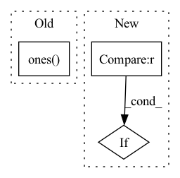

Pattern ID :2549
Before Change
// point_features_list.append(pooled_features.view(batch_size, num_keypoints, -1))
point_features_list.append(pooled_features)
if self.model_cfg["add_ego_mask_feature"]:
ego_mask = torch.ones( (len(new_xyz), 1), device=point_features_list[0].device)
ego_mask[new_xyz_batch_cnt[0]:] = 0
point_features_list.append(ego_mask)
point_features = torch.cat(point_features_list, dim=1)After Change
boxes = torch.zeros((len(dets_list), max_len, 7), dtype=dets_list[0].dtype,
device=dets_list[0].device)
for i, dets in enumerate(dets_list):
if len(dets)==0 :
continue
cur_dets = dets.clone()
if self.model_cfg["enlarge_selection_boxes"]:
cur_dets[:, 3:6] += 0.5In pattern: SUPERPATTERN
Frequency: 3
Non-data size: 3
Instances Fragment ID: 14790016
Project Name: derrickxunu/opencood
Commit Name: c7ecf237666697c93ad84b5d271c16e133ac8ccb
Time: 2022-04-01
Author: yunshuang.yuan@ikg.uni-hannover.de
File Name: opencood/models/sub_modules/vsa.py
M Class Name: VoxelSetAbstraction
N Class Name: VoxelSetAbstraction
M Method Name: forward(2)
N Method Name: forward(2)
M Parent Class: nn.Module
N Parent Class: nn.Module
M File Name: opencood/models/sub_modules/vsa.py
N File Name: opencood/models/sub_modules/vsa.py
M Start Line: 217
M End Line: 289
N Start Line: 196
N End Line: 293
Before Change
factors = torch.exp(self.static_weight * x /
(1.0 + self.weight * x))
factors = factors[:, torch.tril(
torch.ones( self.nelec, self.nelec) ) == 0].prod(1)
return factors.view(-1, 1)
// return JastrowFunction.apply(input,self.weight,self.static_weight)After Change
r = self.edist(pos)
jast = self._get_jastrow_elements(r)
if derivative == 0 :
return self._unique_pair_prod(jast)
elif derivative == 1:
return self._jastrow_derivative(r, jast) Fragment ID: 14790018
Project Name: nlesc-jcer/qmctorch
Commit Name: 6b509199d76bd791e5424953ee8603369af102fc
Time: 2019-12-13
Author: nicolas.gm.renaud@gmail.com
File Name: deepqmc/wavefunction/jastrow.py
M Class Name: TwoBodyJastrowFactor
N Class Name: TwoBodyJastrowFactor
M Method Name: forward(3)
N Method Name: forward(2)
M Parent Class: nn.Module
N Parent Class: nn.Module
M File Name: deepqmc/wavefunction/jastrow.py
N File Name: deepqmc/wavefunction/jastrow.py
M Start Line: 51
M End Line: 55
N Start Line: 61
N End Line: 85
Before Change
batch, permutation_dim, -1
)
combined_embedding = self.combining_function(trial_embeddings, dim=1)
trial_counts = torch.ones( batch, 1, dtype=torch.float32) * permutation_dim
// otherwise we need to loop over the batch to account for varying trial lengths
else:After Change
// Take mean over permutation dimension divide by number of trials
// (instead of just taking torch.mean) to account for masking.
if self.aggregation_fn == "mean" :
combined_embedding = (
trial_embeddings.sum(dim=self.aggregation_dim) / trial_counts
)
else: Fragment ID: 14790020
Project Name: mackelab/sbi
Commit Name: 3831fd6d5fda0ca050db8c54868ed30558451042
Time: 2023-03-01
Author: jan.boelts@tum.de
File Name: sbi/neural_nets/embedding_nets.py
M Class Name: PermutationInvariantEmbedding
N Class Name: PermutationInvariantEmbedding
M Method Name: forward(2)
N Method Name: forward(2)
M Parent Class: nn.Module
N Parent Class: nn.Module
M File Name: sbi/neural_nets/embedding_nets.py
N File Name: sbi/neural_nets/embedding_nets.py
M Start Line: 274
M End Line: 300
N Start Line: 279
N End Line: 306